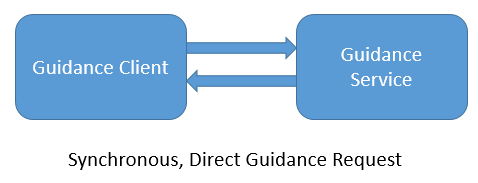
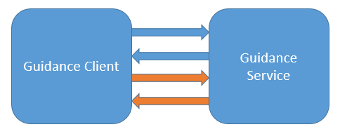

Current Build


To support the evaluation use case, the DecisionSupportServiceModule and DecisionSupportRule resources both define an $evaluate operation with the same signature. The operation allows for consistent invocation of decision support functionality across a broad range of decision support artifacts, allowing consumers to implement the request/response pipeline once to enable access to any decision support functionality provided by the service.
The results of the evaluation are returned as a GuidanceResponse resource. This response contains any output parameters returned by the module, as well as a structured description of any actions to be taken. For example, in response to a request for Immunization guidance, an action may be to update the immunization plan for a patient, indicating which immunizations are recommended to be administered to bring the patient into compliance with the immunization guidelines.
The $evaluate operation provides a complete example of a request and response using the Guideline Appropriate Ordering decision support service module: $evaluate operation example
The above example uses the profiles defined in the Guideline Appropriate Ordering IG.
In the simplest case, an application requests guidance from a decision support service as part of a particular trigger, usually a specific point in a clinical workflow:
For example, on the placement of an order for a specific imaging study, the application performs an $evaluate on the Guideline Appropriate Ordering module:
The decision support service processes the request and determines whether the order is appropriate given the patient information and indication for the requested procedure. The result is returned as a GuidanceResponse resource with a status of success, and the calling application examines the appropriateness score and determines the appropriate action to take, either proceed with placing the order, or prompt the user that the requested procedure is not appropriate based on the guidelines returned in the response.
In some cases, the decision support service may determine that additional information is required in order to continue processing, or that additional information may result in a more accurate or more appropriate result:
In these cases, the GuidanceResponse will be returned with a status of data-requested or data-required, to indicate the particular scenario, and will contain additional information, usually stated in the form of additional DataRequirement specifications, to let the calling application know what data is needed. The calling application then repeats the request, providing the additional requested information, and the service continues processing. This process can be repeated as many times as necessary to obtain appropriate guidance from the service.
In addition to the direct integration, the $evaluate operation can be used as a component within a larger infrastructure. For example:
In this scenario, the decision support service registers with an Event Publishing Service (EPS) to be notified when events of interest occur. An EHR subscribed to the same EPS system can then integrate with the decision support service without needing to know anything about the servicing system (or systems).
© HL7.org 2011+. FHIR STU3 Candidate (v1.4.0-8453) generated on Mon, Jun 6, 2016 20:22+0000. QA Page
Links: Search  |
Version History |
Table of Contents |
Compare to DSTU2 |
|
Version History |
Table of Contents |
Compare to DSTU2 |
 |
Propose a change
|
Propose a change